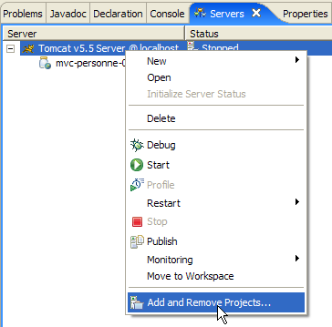
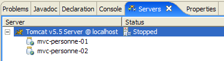

6. Webanwendung MVC [personne] – Version 2
Wir werden nun Varianten der vorherigen Anwendung [/personne1] anbieten, die wir [/personne2, /personne3, ...] nennen werden. Diese Varianten ändern nichts an der ursprünglichen Architektur der Anwendung, die wie folgt bleibt:

Bei diesen Varianten werden wir uns in unseren Erläuterungen kurz fassen. Wir werden lediglich die Änderungen gegenüber der vorherigen Version vorstellen.
6.1. Einleitung
Wir beabsichtigen nun, unsere Anwendung um eine Sitzungsverwaltung zu erweitern. Zur Erinnerung:
- Der Client-Server-Dialog HTTP besteht aus einer Abfolge von Anfrage-Antwort-Sequenzen, die nicht miteinander verbunden sind
- Die Sitzung dient als Speicher zwischen verschiedenen Anfrage-Antwort-Sequenzen desselben Benutzers. Bei N Benutzern gibt es N Sitzungen.
Die folgende Bildsequenz zeigt, wie die Anwendung nun funktionieren soll:
Austausch Nr. 1
 |  |
Neu ist der Link zurück zum Formular, der in der Ansicht [erreurs] hinzugefügt wurde.
Austausch Nr. 2
 |  |
Im Austausch Nr. 1 hat der Benutzer für das Paar (Name, Alter) die Werte (xx, yy) angegeben. Wenn der Server im Laufe des Austauschs Kenntnis von diesen Werten erlangt hat, „vergisst“ er sie am Ende des Austauschs. Es ist jedoch festzustellen, dass der Server im Austausch Nr. 2 in der Lage ist, diese Werte in seiner Antwort erneut anzuzeigen. Es ist das Konzept der Sitzung, das es dem Webserver hier ermöglicht, Daten im Verlauf aufeinanderfolgender Client-Server-Austausche zu speichern. Es gibt weitere mögliche Lösungen, um dieses Problem zu beheben.
Im Verlauf des Datenaustauschs Nr. 1 speichert der Server das vom Client übermittelte Paar (Name, Alter) in der Sitzung, um es im Verlauf des Datenaustauschs Nr. 2 anzeigen zu können.
Hier ist ein weiteres Beispiel für die Umsetzung einer Sitzung zwischen zwei Interaktionen:
Kommunikationsvorgang Nr. 1
 |  |
Neu ist der Link zurück zum Formular, der auf der Antwortseite hinzugefügt wurde.
Austausch Nr. 2
 |  |
6.2. Das Eclipse-Projekt
Um das Eclipse-Projekt [mvc-personne-02] der Webanwendung [/personne2] zu erstellen, duplizieren wir das Eclipse-Projekt [mvc-personne-01], um die vorhandenen Daten zu übernehmen. Dazu gehen wir wie folgt vor:
[clic droit sur projet mvc-personne-01 -> Copy]:

dann [clic droit dans Package Explorer -> Paste]:
 |  – Geben wir in [1] den Namen des neuen Projekts und in [2] den Namen eines bereits vorhandenen, aber leeren Ordners an |
Das Projekt [mvc-personne-02] wird daraufhin erstellt:

Es ist vorerst identisch mit dem Projekt [mvc-personne-01]. Wir müssen einige Änderungen manuell vornehmen, bevor wir es verwenden können. Wechseln wir in die Ansicht [Servers] und versuchen wir, diese neue Anwendung zu den von Tomcat verwalteten hinzuzufügen:
 |  |
Wir sehen, dass in [1] das neue Projekt [mvc-personne-02] von Tomcat nicht erkannt wird. Damit es erkannt wird, muss eine Konfigurationsdatei des Projekts [mvc-personne-02] geändert werden. Verwenden wir die Option [File / Open File], um die Datei [<mvc-personne-02>/.settings/.component] zu öffnen:
<?xml version="1.0" encoding="UTF-8"?>
<project-modules id="moduleCoreId">
<wb-module deploy-name="mvc-personne-01">
<wb-resource deploy-path="/" source-path="/WebContent"/>
<wb-resource deploy-path="/WEB-INF/classes" source-path="/src"/>
<property name="java-output-path" value="/build/classes/"/>
<property name="context-root" value="personne1"/>
</wb-module>
</project-modules>
Zeile 3 gibt den Namen des Webmoduls an, das in Tomcat bereitgestellt werden soll. Dieser Name ist hier derselbe wie der des Projekts [mvc-personne-01]. Wir ändern ihn in [mvc-personne-02]:
<wb-module deploy-name="mvc-personne-02">
Außerdem können wir die Gelegenheit nutzen, in Zeile 7 den Namen des Anwendungskontexts „[mvc-personne-02]“ zu ändern, der mit dem des Projekts „[mvc-personne-01]“ in Konflikt steht:
<property name="context-root" value="personne2"/>
Diese zweite Änderung konnte direkt in Eclipse vorgenommen werden. Ich habe jedoch nicht herausgefunden, wie die erste Änderung ohne Umweg über die Konfigurationsdatei durchgeführt werden kann.
Anschließend speichern wir die neue Datei [.content], beenden Eclipse und starten es neu, damit die Änderung übernommen wird.
Nachdem Eclipse neu gestartet wurde, versuchen wir nun, den Vorgang auszuführen, der zuvor fehlgeschlagen ist:
 |
Diesmal wird das Projekt „[mvc-personne-02]“ korrekt erkannt. Wir fügen es zu den Projekten hinzu, die für die Ausführung durch Tomcat konfiguriert sind:

6.3. Konfiguration der Webanwendung [personne2]
Die Datei web.xml der Anwendung /personne2 sieht wie folgt aus:
<?xml version="1.0" encoding="UTF-8"?>
<web-app id="WebApp_ID" version="2.4"
xmlns="http://java.sun.com/xml/ns/j2ee"
xmlns:xsi="http://www.w3.org/2001/XMLSchema-instance"
xsi:schemaLocation="http://java.sun.com/xml/ns/j2ee http://java.sun.com/xml/ns/j2ee/web-app_2_4.xsd">
<display-name>mvc-personne-02</display-name>
<!-- ServletPersonne -->
<servlet>
<servlet-name>personne</servlet-name>
<servlet-class>
istia.st.servlets.personne.ServletPersonne
</servlet-class>
<init-param>
<param-name>urlReponse</param-name>
<param-value>
/WEB-INF/vues/reponse.jsp
</param-value>
</init-param>
<init-param>
<param-name>urlErreurs</param-name>
<param-value>
/WEB-INF/vues/erreurs.jsp
</param-value>
</init-param>
<init-param>
<param-name>urlFormulaire</param-name>
<param-value>
/WEB-INF/vues/formulaire.jsp
</param-value>
</init-param>
<init-param>
<param-name>urlControleur</param-name>
<param-value>
main
</param-value>
</init-param>
<init-param>
<param-name>lienRetourFormulaire</param-name>
<param-value>
Retour au formulaire
</param-value>
</init-param>
</servlet>
<!-- Zuordnung ServletPersonne-->
<servlet-mapping>
<servlet-name>personne</servlet-name>
<url-pattern>/main</url-pattern>
</servlet-mapping>
<!-- Startdateien -->
<welcome-file-list>
<welcome-file>index.jsp</welcome-file>
</welcome-file-list>
</web-app>
Diese Datei ist identisch mit der der vorherigen Version, außer dass sie zwei neue Initialisierungsparameter enthält:
- Zeile 6: Der Anzeigename der Webanwendung wurde in [mvc-personne-02] geändert
- Zeilen 31–36: Definieren den Konfigurationsparameter mit dem Namen [urlControleur], bei dem es sich um die URL [main] handelt, die zum Servlet [ServletPersonne] führt
- Zeilen 37–42: Definieren einen Konfigurationsparameter namens [lienRetourFormulaire], der den Text des Links zurück zum Formular auf den Seiten JSP, [erreurs.jsp] und [reponse.jsp] angibt.
Die Startseite [index.jsp] ändert sich:
<%@ page language="java" contentType="text/html; charset=ISO-8859-1"
pageEncoding="ISO-8859-1"%>
<!DOCTYPE HTML PUBLIC "-//W3C//DTD HTML 4.01 Transitional//EN">
<%
response.sendRedirect("/personne2/main");
%>
- Zeile 5: Die Seite [index.jsp] leitet den Client zur URL des Controllers [ServletPersonne] der Anwendung [/personne2] weiter.
6.4. Der Code der Ansichten
6.4.1. Die Ansicht [formulaire]
Diese Ansicht ist identisch mit der der vorherigen Version:

Sie wird von der folgenden Seite JSP [formulaire.jsp] generiert:
<%@ page language="java" contentType="text/html; charset=ISO-8859-1"
pageEncoding="ISO-8859-1"%>
<!DOCTYPE HTML PUBLIC "-//W3C//DTD HTML 4.01 Transitional//EN">
<%
// Die Daten der Vorlage werden abgerufen
String nom=(String)session.getAttribute("nom");
String age=(String)session.getAttribute("age");
String urlAction=(String)request.getAttribute("urlAction");
%>
<html>
<head>
<title>Personne - formulaire</title>
</head>
<body>
<center>
<h2>Personne - formulaire</h2>
<hr>
<form action="<%=urlAction%>" method="post">
<table>
<tr>
<td>Nom</td>
<td><input name="txtNom" value="<%= nom %>" type="text" size="20"></td>
</tr>
<tr>
<td>Age</td>
<td><input name="txtAge" value="<%= age %>" type="text" size="3"></td>
</tr>
<tr>
</table>
<table>
<tr>
<td><input type="submit" value="Envoyer"></td>
<td><input type="reset" value="Rétablir"></td>
<td><input type="button" value="Effacer"></td>
</tr>
</table>
<input type="hidden" name="action" value="validationFormulaire">
</form>
</center>
</body>
</html>
Neuerungen:
- In Zeile 19 verfügt das Formular nun über das Attribut „[action]“, dessen Wert die URL ist, an die der Browser die Formularwerte senden soll, wenn der Benutzer auf die Schaltfläche „[Envoyer]“ vom Typ „submit“ klickt. Die Variable [urlAction] erhält den Wert action="main". Die Ansicht [formulaire] wird nach folgenden Aktionen des Benutzers angezeigt:
- Erstanfrage: GET /personne2/main
- Klick auf den Link [Retour au formulaire]: GET /personne2/main?action=retourFormulaire
Da das Attribut [action] keine absolute URL (die mit / beginnt) angibt, sondern eine relative URL (die nicht mit / beginnt), verwendet der Browser den ersten Teil der URL der aktuell angezeigten Seite [/personne2] und fügt die relative URL daran an. Die URL von POST lautet somit [/personne2/main], also die des Controllers. Diese Anfrage POST wird von den Parametern [txtNom, txtAge, action] aus den Zeilen 23, 27 und 38 begleitet.
- Zeile 8: Der Wert des Elements [urlAction] aus dem Modell wird abgerufen. Er wird in den Attributen der aktuellen Anfrage gesucht. Er wird in Zeile 19 verwendet.
- Zeilen 6–7: Die Werte der Elemente [nom, age] aus dem Modell werden abgerufen. Sie werden in den Attributen der Sitzung gesucht und nicht mehr wie in der vorherigen Version in denen der Abfrage. Dies dient dazu, die Anforderungen der Abfrage [GET /personne2/main?action=retourFormulaire] für den Link zu den Ansichten [réponse] und [erreurs] zu erfüllen. Vor der Anzeige dieser beiden Ansichten speichert der Controller die im Formular eingegebenen Daten in der Sitzung, sodass er sie wiederfinden kann, wenn der Benutzer den Link [Retour au formulaire] der Ansichten [réponse] und [erreurs] verwendet.
6.4.2. Die Ansicht [reponse]
Diese Ansicht zeigt die im Formular eingegebenen Werte an, sofern diese gültig sind:
 | |
Im Vergleich zur vorherigen Version ist der Link [Retour au formulaire] neu. Die Ansicht wird von der folgenden Seite JSP [reponse.jsp] generiert:
<%@ page language="java" contentType="text/html; charset=ISO-8859-1"
pageEncoding="ISO-8859-1"%>
<!DOCTYPE HTML PUBLIC "-//W3C//DTD HTML 4.01 Transitional//EN">
<%
// Die Daten aus dem Modell werden abgerufen
String nom=(String)request.getAttribute("nom");
String age=(String)request.getAttribute("age");
String lienRetourFormulaire=(String)request.getAttribute("lienRetourFormulaire");
%>
<html>
<head>
<title>Personne</title>
</head>
<body>
<h2>Personne - réponse</h2>
<hr>
<table>
<tr>
<td>Nom</td>
<td><%= nom %>
</tr>
<tr>
<td>Age</td>
<td><%= age %>
</tr>
</table>
<br>
<a href="?action=retourFormulaire"><%= lienRetourFormulaire %></a>
</body>
</html>
- Zeile 31: Der Link zurück zum Formular. Dieser Link besteht aus zwei Komponenten:
- das Ziel [href="?action=retourFormulaire"]. Die Ansicht [réponse] wird nach der Ansicht POST des Formulars [formulaire.jsp] unter der URL [/personne2/main] angezeigt. Es ist also diese letzte URL, die im Browser angezeigt wird, wenn die Ansicht [réponse] angezeigt wird. Ein Klick auf den Link [Retour au formulaire] löst dann einen GET-Aufruf des Browsers an die URL aus, die durch das Attribut [href] des Links angegeben ist, in diesem Fall „?action=retourFormulaire“. Da in [href] keine URL angegeben ist, verwendet der Browser die URL der aktuell angezeigten Ansicht, c.a.d. [/personne2/main]. Letztendlich führt ein Klick auf den Link [Retour au formulaire] zu einem GET-Request des Browsers an die URL [/personne2/main?action=retourFormulaire], c.a.d – die URL des Anwendungscontrollers – zusammen mit dem Parameter [action], um ihm mitzuteilen, was er tun soll.
- Der Text des Links. Dieser ist Teil der Vorlage, die vom Controller an die Seite übermittelt und in Zeile 10 abgerufen wird.
6.4.3. Die Ansicht [erreurs]
Diese Ansicht meldet Eingabefehler im Formular:
| |
Im Vergleich zur vorherigen Version ist der Link [Retour au formulaire] neu. Die Ansicht wird von der folgenden Seite JSP [erreurs.jsp] generiert:
<%@ page language="java" contentType="text/html; charset=ISO-8859-1"
pageEncoding="ISO-8859-1"%>
<!DOCTYPE HTML PUBLIC "-//W3C//DTD HTML 4.01 Transitional//EN">
<%@ page import="java.util.ArrayList" %>
<%
// Die Daten aus der Vorlage werden abgerufen
ArrayList erreurs=(ArrayList)request.getAttribute("erreurs");
String lienRetourFormulaire=(String)request.getAttribute("lienRetourFormulaire");
%>
<html>
<head>
<title>Personne</title>
</head>
<body>
<h2>Les erreurs suivantes se sont produites</h2>
<ul>
<%
for(int i=0;i<erreurs.size();i++){
out.println("<li>" + (String) erreurs.get(i) + "</li>\n");
}//für
%>
</ul>
<br>
<a href="?action=retourFormulaire"><%= lienRetourFormulaire %></a>
</body>
</html>
- Zeile 26: Der Link zurück zum Formular. Dieser Link ist identisch mit dem der Ansicht [réponse]. Der Leser wird gebeten, gegebenenfalls die Erläuterungen zu dieser Ansicht noch einmal nachzulesen.
6.5. Testen der Ansichten
Um die Tests der vorherigen Ansichten durchzuführen, duplizieren wir deren Seiten JSP im Ordner /WebContent/JSP des Eclipse-Projekts:

Anschließend werden die Seiten im Ordner JSP wie folgt geändert:
[formulaire.jsp]:
...
<%
// -- Test: Die Seitenvorlage wird erstellt
session.setAttribute("nom","tintin");
session.setAttribute("age","30");
request.setAttribute("urlAction","main");
%>
<%
// Die Daten der Vorlage werden abgerufen
String nom=(String)session.getAttribute("nom");
String age=(String)session.getAttribute("age");
String urlAction=(String)request.getAttribute("urlAction");
%>
Die Zeilen 4–5 wurden hinzugefügt, um die Vorlage zu erstellen, die die Seite in den Zeilen 11–13 benötigt.
[reponse.jsp]:
<%
// -- Test: Die Seitenvorlage wird erstellt
request.setAttribute("nom","milou");
request.setAttribute("age","10");
request.setAttribute("lienRetourFormulaire","Retour au formulaire");
%>
<%
// Die Daten der Vorlage werden abgerufen
String nom=(String)request.getAttribute("nom");
String age=(String)request.getAttribute("age");
String lienRetourFormulaire=(String)request.getAttribute("lienRetourFormulaire");
%>
Die Zeilen 4–6 wurden hinzugefügt, um die Vorlage zu erstellen, die die Seite in den Zeilen 11–13 benötigt.
[erreurs.jsp]:
<%
// -- Test: Die Seitenvorlage wird erstellt
ArrayList<String> erreurs1=new ArrayList<String>();
erreurs1.add("erreur1");
erreurs1.add("erreur2");
request.setAttribute("erreurs",erreurs1);
request.setAttribute("lienRetourFormulaire","Retour au formulaire");
%>
<%
// Daten aus der Vorlage abrufen
ArrayList erreurs=(ArrayList)request.getAttribute("erreurs");
String lienRetourFormulaire=(String)request.getAttribute("lienRetourFormulaire");
%>
Die Zeilen 4–8 wurden hinzugefügt, um die Vorlage zu erstellen, die die Seite in den Zeilen 13–14 benötigt.
Starten wir Tomcat, falls dies noch nicht geschehen ist, und rufen wir dann die folgenden URLs auf:
 |  |
 |
Wir erhalten tatsächlich die erwarteten Ansichten.
6.6. Der Controller [ServletPersonne]
Der Controller [ServletPersonne] der Webanwendung [/personne2] wird die folgenden Aktionen verarbeiten:
Nr. | Anfrage | Quelle | Verarbeitung |
1 | [GET /personne2/main] | vom Benutzer eingegebene URL | - die leere Ansicht [formulaire] senden |
2 | [POST /personne2/main] mit Parametern [txtNom, txtAge, Aktion] gesendet | Klick auf die Schaltfläche [Envoyer] in der Ansicht [formulaire] | - die Werte der Parameter [txtNom, txtAge] überprüfen - Falls sie falsch sind, die Ansicht [erreurs(erreurs)] senden - Wenn sie korrekt sind, die Ansicht [reponse(nom,age)] senden |
3 | [GET /personne2/main? action=retourFormulaire] | Klick auf den Link [Zurück zum Formular] der Ansichten Antwort] und [erreurs]. | - Die Ansicht [formulaire] mit den zuletzt eingegebenen Werten vorausgefüllt senden |
Wir haben also eine neue Aktion zu bearbeiten: [GET /personne2/main?action=retourFormulaire].
6.6.1. Grundgerüst des Controllers
Das Grundgerüst des Controllers [ServletPersonne] ist nahezu identisch mit dem der Vorgängerversion:
Neuerungen:
- Zeile 4: Da eine Sitzung verwendet wird, muss das Paket [HttpSession] importiert werden
- Zeilen 28–30: Die neue Methode [doRetourFormulaire] verarbeitet die neue Aktion: [GET /personne2/main?action=retourFormulaire].
6.6.2. Initialisierung des Controllers [init]
Die Methode [init] ist identisch mit der der vorherigen Version. Sie überprüft, ob die in der Tabelle [paramètres] deklarierten Elemente in der Datei [web.xml] vorhanden sind:
- Zeile 5: Die Parameter [urlControleur] (URL des Controllers) und [lienRetourFormulaire] (Linktext der Ansichten [réponse] und [erreurs]) wurden hinzugefügt.
6.6.3. Die Methode [doGet]
Die Methode [doGet] muss die Aktion [GET /personne2/main?action=retourFormulaire] verarbeiten, die zuvor nicht existierte:
- Zeilen 6–14: Es wird überprüft, ob die Liste der Initialisierungsfehler leer ist. Ist dies nicht der Fall, wird die Ansicht [erreurs(erreursInitialisation)] angezeigt, die den oder die Fehler meldet.
Um diesen Code zu verstehen, muss man sich an die Vorlage der Ansicht [erreurs] erinnern:
<%
// Daten aus der Vorlage abrufen
ArrayList erreurs=(ArrayList)request.getAttribute("erreurs");
String lienRetourFormulaire=(String)request.getAttribute("lienRetourFormulaire");
%>
Die Ansicht [erreurs] erwartet in der Abfrage ein Schlüsselelement „fehler“. Der Controller erstellt dieses Element in Zeile 8. Sie erwartet außerdem ein Schlüsselelement „lienRetourFormulaire“. Der Controller erstellt dieses Element in Zeile 9. Hier ist der Text des Links leer. In der gesendeten Ansicht [erreurs] wird es daher keinen Link geben. Denn wenn bei der Initialisierung der Anwendung Fehler aufgetreten sind, muss diese neu konfiguriert werden. Es besteht kein Grund, dem Benutzer über einen Link die Fortsetzung der Anwendung anzubieten.
- Zeilen 34–37: Verarbeitung der neuen Aktion [GET /personne2/main?action=retourFormulaire]
6.6.4. Die Methode [doInit]
Diese Methode verarbeitet die Anfrage Nr. 1 [GET /personne2/main]. Bei dieser Anfrage muss sie die leere Ansicht [formulaire(nom,age)] senden. Ihr Code lautet wie folgt:
- Zeile 4: Die aktuelle Sitzung wird abgerufen, sofern sie existiert, andernfalls wird sie angelegt (Parameter true von getSession).
- Zeilen 9–10: Die Ansicht [formulaire] wird angezeigt. Zur Erinnerung: Das von dieser Ansicht erwartete Modell lautet:
<%
// Daten aus dem Modell abrufen
String nom=(String)session.getAttribute("nom");
String age=(String)session.getAttribute("age");
String urlAction=(String)request.getAttribute("urlAction");
%>
- Zeilen 6–7: Die Elemente [nom,age] des Modells der Ansicht [formulaire] werden mit leeren Zeichenfolgen initialisiert und in die Sitzung gestellt, da die Ansicht sie dort erwartet.
- Zeile 8: Das Element [urlAction] des Modells wird mit dem Wert des Parameters [urlControleur] aus der Datei [web.xml] initialisiert und in die Abfrage eingefügt.
6.6.5. Die Methode [doValidationFormulaire]
Diese Methode verarbeitet die Abfrage Nr. 2 [POST /personne2/main], in der die übermittelten Parameter [action, txtNom, txtAge] lauten. Ihr Code lautet wie folgt:
- Zeilen 5–6: Aus der Anfrage des Kunden werden die Werte der Parameter „txtNom“ und „txtAge“ abgerufen.
- Zeilen 8–10: Diese Werte werden in der Sitzung gespeichert, damit sie wieder abgerufen werden können, wenn der Benutzer auf den Link „[Retour au formulaire]“ in den Ansichten „[réponse]“ und „[erreurs]“ klickt.
- Zeilen 12–19: Die Gültigkeit der Werte beider Parameter wird überprüft
- Zeilen 21–28: Ist einer der Parameter fehlerhaft, wird die Ansicht [erreurs(erreurs,lienRetourFormulaire)] angezeigt. Zur Erinnerung: Das Modell dieser Ansicht lautet:
<%
// Die Daten aus der Vorlage werden abgerufen
ArrayList erreurs=(ArrayList)request.getAttribute("erreurs");
String lienRetourFormulaire=(String)request.getAttribute("lienRetourFormulaire");
%>
- Zeilen 30–34: Wenn die beiden abgerufenen Parameter „txtNom“ und „txtAge“ gültige Werte haben, wird die Ansicht [reponse(nom,age,lienRetourFormulaire)] angezeigt. Man muss sich an die Vorlage der Ansicht [reponse] erinnern:
<%
// Daten aus der Vorlage werden abgerufen
String nom=(String)request.getAttribute("nom");
String age=(String)request.getAttribute("age");
String lienRetourFormulaire=(String)request.getAttribute("lienRetourFormulaire");
%>
6.6.6. Die Methode [doRetourFormulaire]
Diese Methode verarbeitet die Abfrage Nr. 3 [GET /personne2/main?action=retourFormulaire]. Ihr Code lautet wie folgt:
Nach Ausführung dieser Methode muss die Ansicht [formulaire] angezeigt werden, die mit den zuletzt vom Benutzer vorgenommenen Eingaben vorausgefüllt ist. Zur Erinnerung: Das Modell der Ansicht [formulaire] lautet wie folgt:
<%
// Daten aus der Vorlage abrufen
String nom=(String)session.getAttribute("nom");
String age=(String)session.getAttribute("age");
String urlAction=(String)request.getAttribute("urlAction");
%>
Die Methode [doRetourFormulaire] muss daher das vorstehende Modell erstellen.
- Zeile 4: Wir rufen die Sitzung ab, in der der Controller die eingegebenen Werte (Name, Alter) gespeichert hat.
- Zeile 7: Der Name wird aus der Sitzung abgerufen
- Zeilen 8–9: Falls er dort nicht vorhanden ist, wird er mit einem leeren Wert hinzugefügt. Dieser Fall sollte im normalen Betrieb der Anwendung nicht auftreten, da die Aktion [retourFormulaire] immer nach der Aktion [validationFormulaire] stattfindet, also nachdem die eingegebenen Daten in der Sitzung gespeichert wurden. Eine Sitzung kann jedoch ablaufen, da sie eine begrenzte Lebensdauer hat, oft einige Dutzend Minuten. In diesem Fall hat Zeile 4 eine neue Sitzung erstellt, in der der Name nicht vorhanden ist. Daher wird in der neuen Sitzung ein leerer Name gesetzt.
- Zeilen 11–13: Das Gleiche gilt für das Alter
- Wenn man das Problem der abgelaufenen Sitzung außer Acht lässt, sind die Zeilen 3–13 überflüssig. Die Elemente [nom,age] des Modells befinden sich bereits in der Sitzung. Sie müssen daher nicht erneut hinzugefügt werden.
- Zeile 15: Der Wert des Elements [urlAction] des Modells wird festgelegt
6.7. Tests
Tomcat starten oder neu starten. Die URL [http://localhost:8080/personne2] aufrufen und anschließend die in Abschnitt 6.1 als Beispiel gezeigten Tests fortsetzen.